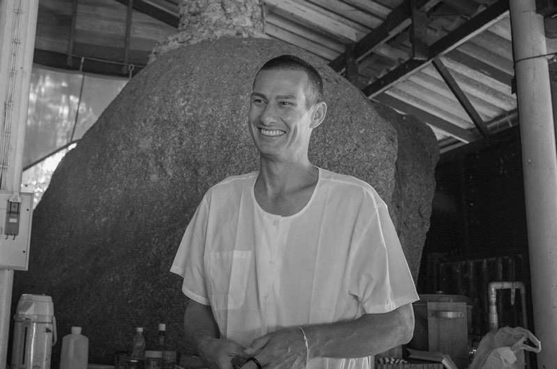

20. Anthony Markwell#
{kind=link}
301 Anthony ordained as a Buddhist monk aged 24 at Wat Khao Chong Lom in 1995 with his first teacher the late Ven. Phra Acharn Leua Pannavaro. He was instructed in satipatthana vipassana at Vivek Asom Meditation Centre by Ven. Ajhan Charee Jaruvanno and Ven. Ajahn Somsak Sorado, and practiced intensely at Wat Don Put under the late Ven. Luang Por Bhavanakitti, a rare monk of noble wisdom. He moved to Myanmar to continue his training in the Mahasi method in 1996, receiving strict personal supervision during a seven-month retreat with the late Ven. Sayadaw U Pandita at Panditarama, Yangon. Those two years revelled the method and mode of insight practice.
The lure of the forest monk lifestyle and deep concentration led Anthony to seek out the Ven. Sayadaw U Acinna in 1997 at the Pa Auk Forest Monastery, where he received instruction for a year in anapanasati (mindfulness with breathing) and four elements meditation. Anthony retreated to the hills 302 of the Shan State for a further year of meditation in an isolated monastery. After four years in robes and constant practice, Anthony studied Buddhist texts and Pali language at the International Buddhist University in Yangon consolidating his meditation experiences with scriptural studies. His interest in Pali was furthered through self-study whilst living at the Shwedagon Pagoda in 2000.
A two-year pilgrimage gave the opportunity to wander and dwell in the forest meditation monasteries of Sri Lanka. He attended the Kalachakra Initiation with His Holiness the Dalai Lama in Bodhgaya 2002, and developed an interest in choiceless awareness meditation techniques during visits to monasteries in India, Nepal, China and Tibet. Anthony spent three extended rains retreats between 2002 – 2005 practicing satipatthana vipassana at Wat Pitsoparam, Ubon Ratchathani, with the late Ven. Luang Por Visarnkemakoon. In 2006, returned home, disrobing from the monkhood after 11 vassa. He experienced life in Melbourne studying and working in the wholesale diamond and gemstone industry for seven years until 2012. He returned to Thailand in 2013, and at the request of Ven. Ajahn Poh (Suan Mokkh) led popular meditation retreats at Wat Kow Tahm between 2013-2016, where he guided thousands of meditators through silent monthly 7-day and annual 21-day vipassana retreats.
Present: He is currently working to establish the infrastructure for Indriya Retreat – Dhamma and Meditation Hall in a secluded fruit garden in Koh Phangan. He plans to start leading non-residential vipassana retreats in 2019.